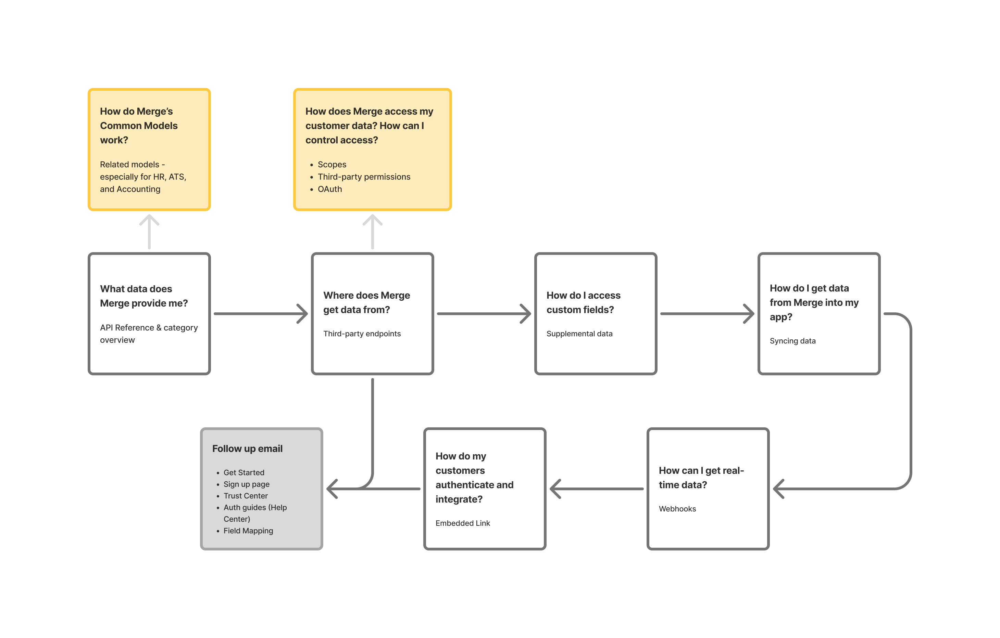
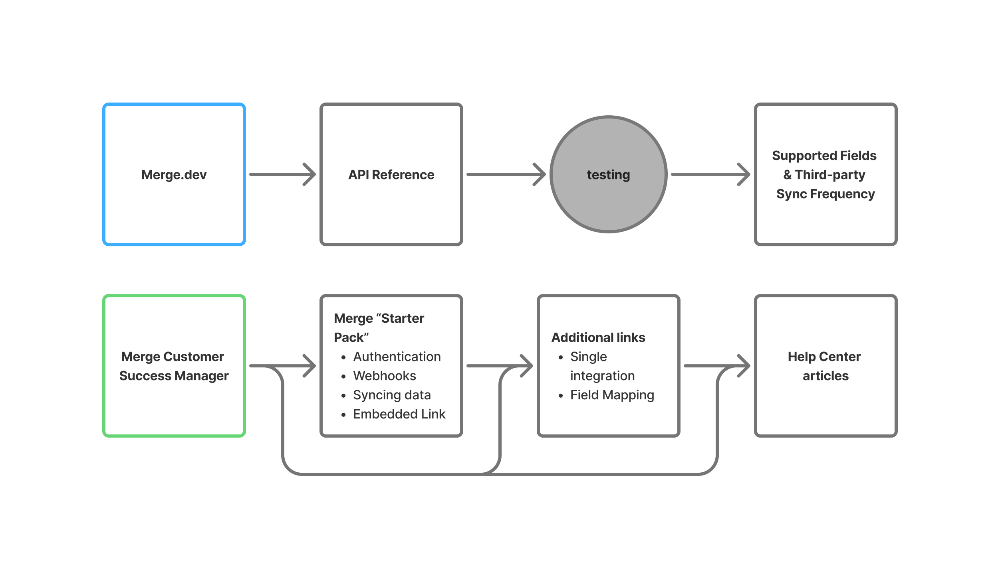
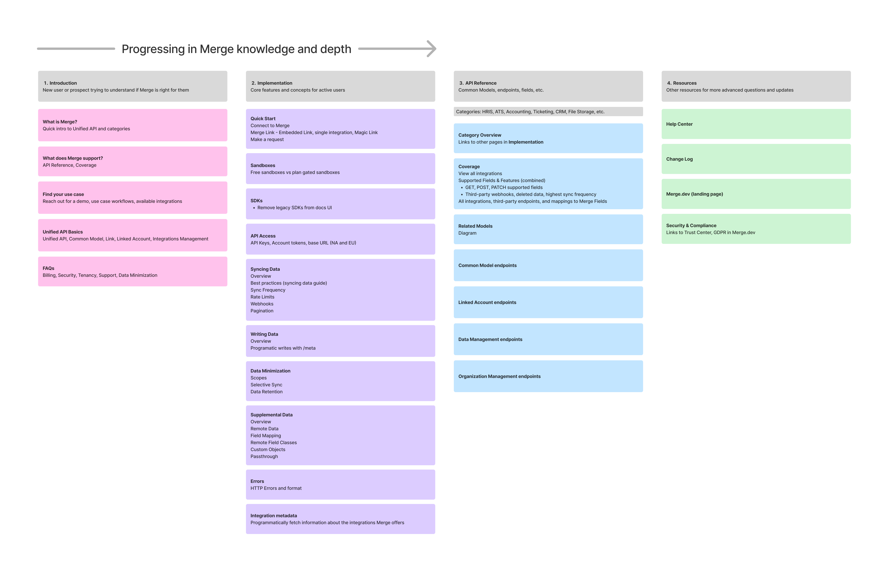

Docs Redesign
Merge, 2024
Transforming a dense knowledge base into an accessible, self-serve documentation experience.
Project Overview & Introduction
As Merge’s API and feature set grew, so did the complexity of its developer documentation. While the content was valuable, users—both customers and prospects—found it hard to navigate without guidance.
I reimagined the information architecture and narrative structure of Merge Docs to support self-service, reduce post-sales burden, and better align with how users actually learn about Merge. Making Merge Docs a more intuitive, self-serviced product would not only provide a better user experience, but also drive more top-of-funnel conversion and reduce costs to scale.
Although the redesign was not ultimately implemented, this work provided great insights into how we could use storytelling, structure, and navigation to support different user journeys.
The Challenge
Merge’s documentation is dense and technically rich but not intuitive to navigate. From my user research, I learned that customers and prospects rely heavily on support from the Merge team to learn more about the product.
The goal was to make Merge Docs a truly self-serve product and design a documentation experience that supports two distinct user journeys:
- Prospects looking to understand what Merge does and whether it fits their needs.
- Customers looking for implementation details and troubleshooting help.
My Role
I initiated this project after noticing recurring friction in how users navigated Merge's documentation. As the sole designer, I led ideation, user research synthesis, and the proposed redesign. While primarily a solo effort, I also collaborated with a product manager to write my first product spec and partnered with solutions engineers to learn about common pain points and validate user journeys. This self-driven project gave me the opportunity to exercise my product thinking and storytelling skills.
Research
I analyzed data from Fullstory and conducted interviews with Merge’s solutions engineers and post-sales to gain insight into how users currently learn about Merge and interact with existing documentation. From my research, I summarized a few key takeaways and mapped common user journeys.
Fullstory diagram shows what pages people frequently navigate to from the Docs homepage.
Key Takeaways
- API Reference is the first section most users visit (and the only section for some)
- Users rarely look at Use Cases even though it’s very useful for prospects or people new to Merge
- Users rarely look at Get Started, but an unofficial “Merge Starter Pack,” which includes guides on authentication, syncing data, webhooks, and embedded Link, is frequently sent to prospects and customers
- Guides content is incredibly useful, but hard to discover and navigate
- Supported Fields and Features tables are extremely useful but hard to find because the Integrations tab name does not indicate that the tables would be inside
- Third-party endpoints are not very useful for customer implementation, but are important to prove Merge’s credibility to prospects
User Journeys & Personas
Based on my research, I developed two key personas and user journeys.
Prospective User
This user is evaluating whether Merge is the right solution for their team or product. They may be a product manager, founder, or solutions lead—not necessarily deeply technical, but familiar with integration challenges. They want to understand Merge’s value quickly and assess technical feasibility without getting lost in API details.
“Can Merge do what I need? How hard is it to implement?”
Questions that prospects will typically ask during a demo with a Solutions Engineer, and the page in Merge Docs that answers each question, respectively. The yellow/orange boxes are common follow-up questions that don’t currently have any documentation to answer.
Key needs:
- A clear, high-level explanation of what Merge does and how it works
- A clear breakdown of supported platforms and data fields (i.e., coverage)
- Content framed around “what can I do with this?” rather than just technical detail
- Proof of Merge’s credibility, such as visible third-party endpoints or case studies
Implementation Engineer
This user (or someone else on their team) has already chosen Merge and is now responsible for setting up the integration. They may be a software engineer or technical team member not necessarily involved in the prior evaluation process. They want clear guidance on how to implement this new product and are focused on execution and fast delivery.
“How do I authenticate and sync data?”
Existing Merge customers typically start from Merge’s landing page or from a conversation with their Customer Success Manager, who then sends the customer links to the articles they need.
Key needs:
- A single place to find everything they need to get started
- Easy-to-scan reference pages and an intuitive structure that minimizes clicking around
- Practical examples, code snippets, and diagrams they can follow or copy
- Troubleshooting resources for when things don’t work as expected
Solution
To address the fragmented experience, I proposed a new information architecture shaped by user intent, not product structure. I began with a top-level navigation redesign, separating all documentation into four main sections:
See full breakdown in Figjam ->
1. Introduction
A storytelling-focused introduction to Merge for newcomers and prospects
- Answers initial question of “Can Merge do what I need?”
- Moved Use Cases in here for better discoverability
2. Implementation
A reorganized section explaining core features and concepts for active customers
- Renamed from Guides to Implementation to be more user-centric and improve discoverability
- Combined existing Get Started content and Authentication, Syncing data, Webhooks, and embedded Link content into a new Quick Start subsection at the beginning,
- Improved organization and made left nav always visible for easy navigation
üñºÔ∏謆[image of new navigation]
- Redesigned overall page layout of implementation docs to be more user friendly with table of contents, video, and related topics
üñºÔ∏謆[image of new page layout]
3. API Reference
The most visited section, prioritized in structure
- Contains all the most frequently accessed information - category overviews, Common Models and endpoints, and supported fields
- Moved Integrations and Supported Fields/Features in here and renamed to Coverage for better discoverability
- Combined Supported Fields and Supported Features into one dynamic table
üñºÔ∏謆[image of new table]
- Moved less important third-party endpoints into a drawer in All integrations
üñºÔ∏謆[image of drawer]
4. Resources
Quick links to Help Center, Changelog, Trust Center, etc.
- This mostly stays the same with the addition of Trust Center links to add credibility for prospects
Final Design
Due to limited engineering bandwidth and competing customer priorities, we ultimately decided not to move forward with implementation on this project. Most of my work remained at the low-fidelity stage in Figjam. I focused on wireframes and structural mockups to communicate the new information architecture and shared my design iterations cross-functionally to incorporate feedback from Product, Sales, and Engineering.
However, I did create a high-fidelity prototype of the Field Mapping doc to explore and validate the redesigned page layout within the proposed “Implementation” section. This prototype showcased two major improvements:
- A persistent left navigation to improve wayfinding and reduce friction while navigating dense content
- A scrolling, single-page layout to support deep reading and minimize context-switching
üñºÔ∏謆[figma prototype embed of field mapping docs page]
Implementation Plan
In addition to the wireframes and prototype, I outlined a phased implementation plan to help the team prioritize work based on impact and effort. The plan was divided into five milestones ordered from least to greatest engineering lift, focusing on updating the most critical pages first. Each milestone was designed to deliver value incrementally to improving the user experience over time without requiring a full overhaul all at once.
Insights
Although the redesign was paused before launch, the project revealed how much opportunity there is to improve the documentation experience by reframing it around real user journeys.
What we learned:
- Content discoverability matters just as much as content quality. Users weren’t missing information because it didn’t exist, but because they didn’t know where to look.
- Naming and structure strongly influence engagement. Renaming “Guides” to “Implementation” and grouping starter content into a “Quick Start” section helped better match users’ mental models.
- Docs are part of the product experience. Especially for technical products like Merge, the documentation is often the first touchpoint for prospects and the primary tool for customers post-sale. Developer docs are not just technical references, they are part of the product’s onboarding experience.
Next Steps:
If this project were to move into development, the next steps I would take are:
- Prototype and usability test the new layout with real prospects
- Collaborate with engineering to implement the five milestones I previously outlined
- Quantify impact by tracking usage patterns in FullStory and support tickets before and after rollout
- Establish a scalable internal system for maintaining and updating documentation